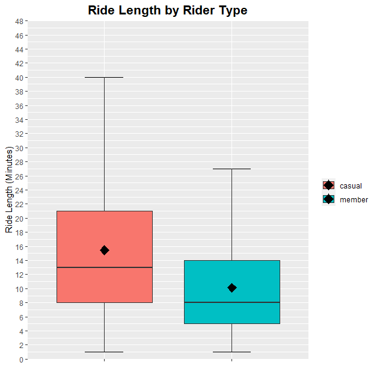
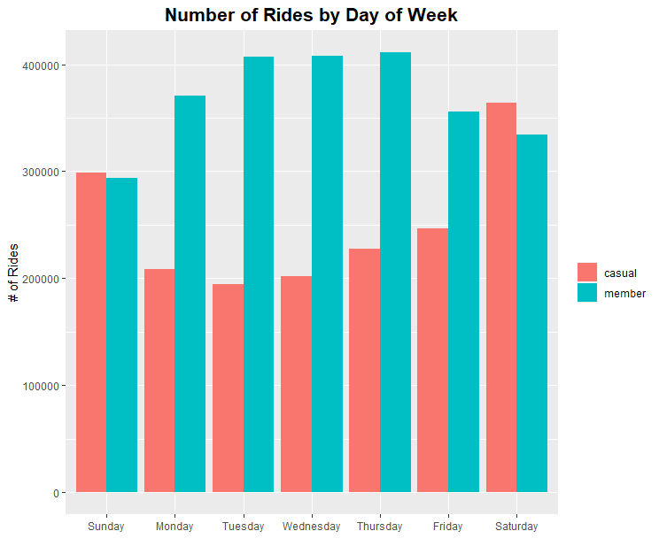
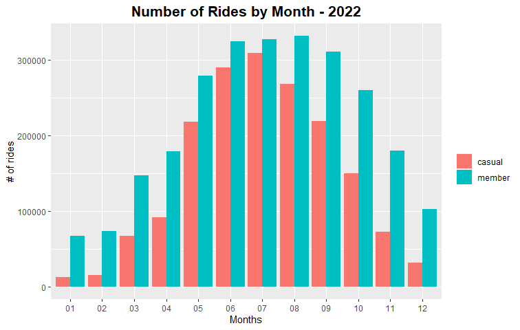
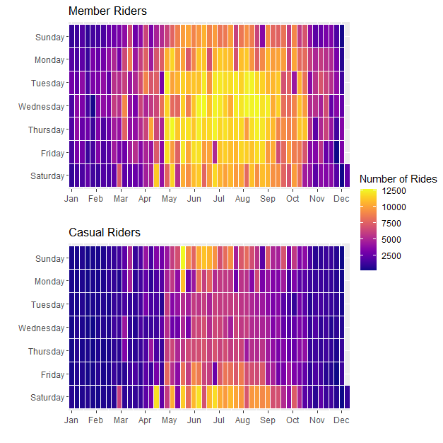
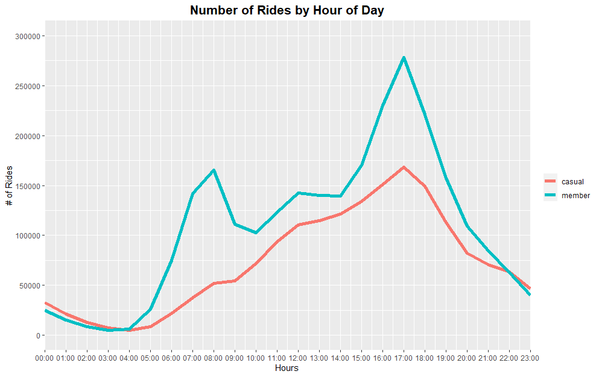
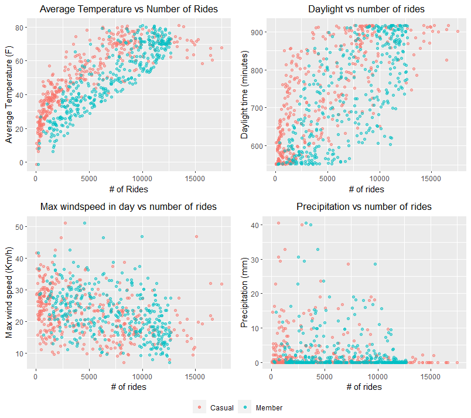

Report and Findings
1. Intro
Cyclistic was launched in 2016 and has become a successful bike-share offering. Since then, the program has grown to include 5,824 bicycles that are geotracked and locked into a network of 692 bike stations throughout the city of Chicago. These bikes can be unlocked from one station and returned to any other station in the system at anytime.
One reason for their success is the flexibility of its pricing plans: single-ride passes, full-day passes, and annual memberships. Customers who purchase annual memberships are known as Cyclistic members, while those that use single-ride or full-day passes are referred to as casual riders.
Cyclistic has concluded that annual members are much more profitable than casual riders. Thus, their goal is clear: Design marketing strategies aimed at converting casual riders into annual members. This report is designed to aid in this goal by helping Cyclistic better understand how annual members and casual riders differ and make recommendations on how to specifically target casual riders to convert them to membership plans.
2. Process
12 months-worth of historical trip data has been provided by Cyclistic to be analyzed. This data covers a timeframe of January 2022 to December 2022. The monthly file entries range from around 100,000 - 800,000 and are saved in their own in a MS Excel CSV file. The data was downloaded from the Divvy Bikes website: https://www.divvybikes.com/system-data. Columns used include:
- ride_id(unique record ID)
- ridable_type(bike type)
- started_at (trip start time)
- ended_at (trip end time)
- start_station_name
- start_station_id
- end_station_name
- end_station_id
- start_lat (coordinates)
- start_lng (coordinates)
- end_lat (coordinates)
- end_lng (coordinates)
Additionally, Chicago weather data was provided by the Historical Weather API found on Open-Meteo website: https://open-meteo.com/en/docs/historical-weather-api. Weather data is divided by day, covering time from 01/01/2022, to 12/31/2022. Columns used include:
- date
- temperature_max(F)
- temperature_min(F)
- sunrise(iso8601)
- sunset(iso8601)
- precipitation_sum (mm)
- windspeed_10m_max (km/h)
- windgusts_10m_max(km/h)
Because of the large amount of information in each file, the cleanup process was split between Excel and R. Additionally, some of the data was reformatted and exported into Tableau to create dashboards and maps that R couldn’t produce. Excel make viewing the data easier and has many built-in features but can’t handle large amounts of data, while R can handle all the data, but isn’t as easy to view or finetune the data. Tableau allowed for creation of dashboards where it would be more time-consuming to do so with R. By using all three, I was able to clean, combine and analyze all the data available. The data was first processed to remove trips that were below 1 minute in length, deleting incomplete data elements, removing test station results, removing negative ride lengths, consolidating stations in the same location, and adding additional data columns to summarize data by month, hour, and week. Finally, for the data that was exported to tableau, a separate dataset was created using grouping start and end stations as pairs, counting the times they appeared in the data set, and separating them between casual and member riders. More information on this can be found in the “Notes” Section of this site.
3. Analysis
3.1 Ride Length by Rider Type
Using the “ride_length” data column, the image above was created to show the difference between member and casual riders in the duration of their trips. Initially, the first iteration of the plot was smushed due to excessively large outliers. Thus, the data had to be cleaned again of outliers using the interquartile range method. After creating an outlier-free version of the “ride_length” data, we found that in causal riders use the bikes for longer trips, with most between the 1 – 52 minutes range and having a median and mean times of 13 and 15.92 minutes respectively. On the other hand, members’ trip duration mostly ranged between 1 to 29 minutes with a median and mean of 8 and 10.12 minutes. While member trips are shorter, they have a higher frequency than casual riders. Of the total 4,323,393 trips tallied, 2,581,143 were made by members, while the remaining 1,742,250 were from casual riders.
3.2 Number of Rides by Days of week
The above plot shows more details into the riding habits of member vs casual riders. The graph clearly shows that members and casual riders differ in their preferred days of riding. We see here that Members have highest trip frequency during the middle of the week, while casual riders have their highest frequency during the weekend and ridership drops during the work week. The mode day for Members is Thursday, while Saturday is the mode for casual riders.
3.3 Number of Rides by Month – 2022
Here we see all the bike rides divided between members and casual riders as well as divided by months. While both types of ridership drop off during the winter months and have their peaks in the middle of the year, casual ridership is more concentrated in the late spring to early fall timeframe with a peak in July, while members are more spread out between mid spring to mid fall with their highest number of riders in August. The begining and end of this time period is known for still having favorable weather outside of peak tourist season (see Notes). This shows that casual ridership is tied closer to the tourism season than Member riders. Also, member riders enjoy a bigger time window with more favorable weather.
3.4 Member vs Casual Rides by Month and Weekday - 2022
This heatmap shows a combination of the data shown in the previous two plots with blue(cooler) cells show lower ridership and a change from blue to red to yellow to indicate increasing numbers. Credit to Isabella Peel (see Notes) as this section is adjusted from her work. This reemphasizes a key difference between the two types of riders which is that most member riders do their bike riding between Monday to Friday (work week) and from April to November, while casual riders focus more on the weekends and during the summer tourism season. This makes it more likely that, along with longer bike rides, casual riders are using the bikes as leisure, since weekends are the traditional days of for most people.
3.5 Number of Rides by Hour of Day
Data from each trip was arranged in a frequency line graph to see how each type of rider used the bikes throughout the day. The datetime object that each entry has coincides with local Chicago time. Data is arranged in hourly increments according to 24-hour military time to avoid AM/PM confusion and track demand. The shape that the data creates in the chart shows that, while casual riders have one daily peak at the 17:00 hour (5:00 PM), Members have two peaks. The first one is at the 8:00 hour (8:00 AM) and the second one is also at the 17:00 hour. These two peaks line up with the start and end of the average workday. This again points to Members differing from casual riders by using Cyclistic's bikes as transportation to and from work.
3.6 Member vs Causal by Weather Impact
The graph above is a compilation of 4 different graphs that use data provided by the Open-Meteo Historical Weather API to see how weather conditions affects ridership. Credit to Isabella Peel (see Notes) as this section is adjusted from her work. This weather data was used to create new variables to measure against ridership numbers. Daily temperature highs and lows were used to create a temperature average and compare it to daily ride numbers. Similarly, daylight hours were calculated by measuring time difference between sunrise and sunset. While member numbers are higher that casual numbers as a whole, casual riders hold peak riding numbers in all weather variables. As temperatures rise, so does ridership, but casual rides have sharper increases and decreases based on temperature. On the other hand, members have a more linear range. A similar effect is seen with daylight time. member trips have a smaller spread in the middle, while casual trips concentrate on the edges. Likewise, precipitation and windspeed have similar spreads. This means that Casual riders are more likely to be affected by weather than members. The peaks in casual bike use conditions also coincide with typical Chicago summer weather, which is also peak tourism time in the city of Chicago. Also, more stable rider numbers by members show that they are more likey riding their bikes regardles of weather, with precipitation the exception which negatively affected both.
3.7 Popular Bike Routes by Casual and Member Riders

The data in this Tableau dashboard was created from the consolidated data used in R and exported into Tableau to see what the differences were, if any, in the places that members casual riders frequented during their bike rides. To do this, a copy of the data frame was made and grouped by the starting station and ending station. After the data was grouped, the time each pair appears was counted and separated by belonging to a member or casual rider. Finally the data was exported and recombined in Tableau to show the most popular bike routes and show how much of the total number of rides belong to either causal riders or members. As dashboard, one can rearrange the data to show only casual or member trips and re-sort the routes to show the most popular routes by each ride type exclusively. With this dashboard, the relation between routes and ridership type is easier to see. Many of the top routes are almost exclusively used by one type of rider or another. While this information on its own is useful, it is also key to finding more about each type of rider by being the foundation to the following dashboard.
3.8 Most Popular Bike Stations from Top Routes

This Map Dashboard was created from the same data used to create the previous dashboard with focusing on the individual trip endpoint (stations) and counting the times they appeared in the Top 100 routes for Casual riders, Members, and overall ride count. To do this, The top 100 routes from each category were isolated and the start and end stations were combined into a list of 200 stations. From here, each time the station appeared on this list is counted and at the end a new list with each unique station and count of appearances is created. This is combined with the latitude and longitude coordinates of each station that the original data source provided and is turned into the Dashboard above. Each point is a station created using lat & lng coordinates, a color to indicate to which top 100 list it belongs to (Member, Causal or Overall) and each point’s size to indicate the appearance on the top 100 list, meaning the bigger the point, the more popular the bike station. By taking some of the previous dashboard data and applying it to a map, we can see a few interesting trends. The most popular stations with casual riders are predominantly at or close to major tourism points of interest and along the parks and beaches of the Lakeshore (E.G. Navy Pier, Millennium Park, Adler Planetarium and Shedd Aquarium). As for popular stations with Members, many were more inland and followed the path of the CTA line that leads into downtown Chicago. Besides these differences, we also found similarities between top casual and member stations. While not being on the same level, some top stations frequented by both casual riders and members are near or at a college or university in the Chicago area. Stations Near Northwestern University and University of Chicago appear in both groups, and stations near University of Illinois Chicago also appear in top member stations as well. These locations give a lot of information into who are the types of people using these bikes and how to make a targeted marketing campaign for them.
3.9 Analysis Conclusion
After looking at all the data and analyzing it in various ways, a few key similarities and differences between casual and member riders have become apparent. First, the uses of Cyclistic’s bikes by each group is different. Casual riders are using these bikes as an instrument of leisure, based on times, duration, and locations that they are using these bikes, while members predominantly see these bikes as a method of transportation to get from one point to another, be it work or school. Second, casual riders have a higher likelihood of not being a resident of the Greater Chicago Area than Members. This is seen by their inclination to ride more during the weekends and tourism peak seasons. Inversely, because Members use Cyclistic’s bikes Monday to Friday and predominantly during peak traffic hours, it can be inferred that they are long term residents of the Chicago area that use the bikes to get to work or school on a regular basis. Third, weather conditions can play an impact in ridership, with members being willing to put up with more than casual riders in terms of bad weather, but only up to a certain point. Chicago’s winters can be harsh and both casual and member ridership plummets during this period of the year. Lastly, casual and member riders have different areas they frequent in their rides, but college and university areas are a significant overlap between the two. This overlap is key to finding casual riders that have overlaps with members and are more likely to convert to the Membership system.
4. Recomendations
Per Cyclistic’s strategy, the following recommendations are geared to focus on converting existing casual bike users to membership users.
Based on the findings, three possible recommendations for Cyclistic are:
1. Campaign convincing that bikes are a viable method of transportation in Chicago
As stated above in the Analysis conclusion, Members see bikes as a viable method of transportation in their day-to-day lives. It wouldn’t make sense to someone to spend money on a membership that they would only use the bikes on weekends or occasionally as a fun activity. Bikes have limitations but it seems that many members use both bikes and Chicago’s CTA trains to get around in downtown based on popular stations. This could be highlighted and advertised in conjunction with CTA to inform people that these two methods of transportation are viable to get to their destination and can be the last push for someone who was on the fence about getting that membership.
2. Marketing in local college & university areas
Based on the findings of section 3.7 & 3.8, outside of Tourist areas, colleges and universities areas had some of the most popular stations overall. Also, it should be noted that, per the U.S. Census, younger adults in urban settings are more likely to commute to work (see Notes). Areas near college campuses have a higher concentration of younger adults who are more likely to be into bike riding as a method of transport. While some of these young adults might move away once they finish their studies, some might still stay in the Chicago area and continue to use their membership to get to their new jobs. Also, because colleges and universities are transitionary places where the population is constantly changing, there is a constant renewal of the population in these areas that can stays within this demographic.
3. Coincide membership campaigns with start of spring
Per sections 3.3 & 3.4, ridership drops significantly during the winter months. Any campaigns to increase membership at this point would be fruitless. If the campaign would coincide with spring, it would be easier to make a case for getting a membership since the ability to enjoy the nice weather on bike would be more apparent and the long-term savings of a membership would feel like a better deal since one could still have up to October to enjoy membership bike rides.